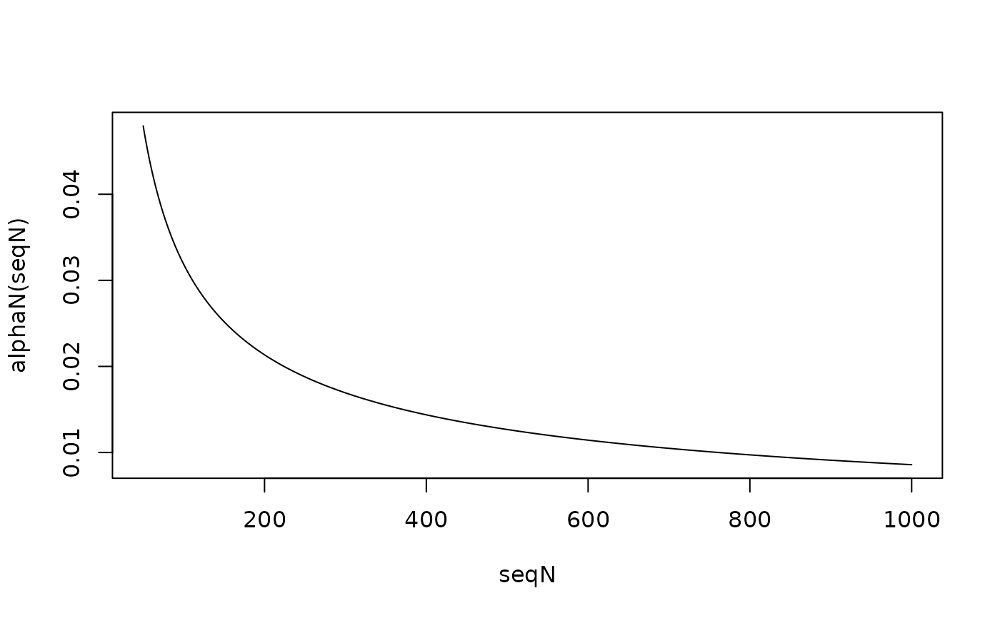

Set the alpha level based on sample size for coefficients in a regression model
Source:R/alphaN.R
alphaN.RdComputes the alpha level required to achieve a desired level of evidence,
expressed as a Bayes factor, when testing a coefficient in a regression
model. The alpha level is a decreasing function of the sample size.
Vectorized over n and BF.
Arguments
- n
Sample size. A positive numeric vector.
- BF
Bayes factor you would like to match. 1 to avoid Lindley's Paradox, 3 to achieve moderate evidence and 10 to achieve strong evidence.
- method
Which Bayes factor to calibrate alpha to. The first four options invert Jeffreys' approximate Bayes factor and differ in the choice of the prior fraction 'b'; the last two invert the exact test-statistic Bayes factors of Klauer et al. (2024), whose priors center the alternative hypothesis on a prespecified effect size
de. One of:"JAB": this choice of b produces Jeffreys' approximate BF (Wagenmakers, 2022)
"min": uses the minimal training sample for the prior (Gu et al., 2018)
"robust": a robust version of "min" that prevents too small b (O'Hagan, 1995)
"balanced": this choice of b balances the type I and type II errors (Gu et al., 2016)
"ES": calibrates alpha to the effect-size Bayes factor (Klauer et al., 2024)
"moment": calibrates alpha to the moment Bayes factor (Klauer et al., 2024), under which effects close to zero are a priori implausible
- upper
The upper limit for the range of realistic effect sizes. Only relevant when method="balanced". Defaults to 1 such that the range of realistic effect sizes is uniformly distributed between 0 and 1, U(0,1).
- de
The prespecified (targeted) effect size in standardized units (Cohen's d). Only used by methods "ES" and "moment". Defaults to 0.5, a medium effect; use 0.2 for small and 0.8 for large effects (Cohen, 1988).
- nu
Degrees of freedom of the prior t distribution for methods "ES" and "moment". The default, NULL, uses the values recommended by Klauer et al. (2024): 3 for "ES" and 5 for "moment".
- r
Scale of the two prior mixture components for method "ES". The default, NULL, uses the recommendation of Klauer et al. (2024), r = sqrt((nu - 2)/nu) * de, which requires nu > 2 and de > 0; otherwise supply
rexplicitly.
Details
For methods "ES" and "moment", the alpha level is found by solving for the
critical t value at which the effect-size or moment Bayes factor equals
BF, and converting that critical value to a two-sided p-value on the t
distribution with n - 1 degrees of freedom (the one-sample /
single-coefficient case of Klauer et al., 2024). The implementation is
validated against the Bayes factors reported in Table 7 of that paper.
Because the moment prior assigns effects near zero a priori density zero,
the alpha level it implies decreases much faster with n than under JAB.
As a special case, setting method = "ES", nu = 1, de = 0 with an
explicit scale (e.g. r = 1) calibrates alpha to the default
(Jeffreys-Zellner-Siow type) Bayes factor of Rouder et al. (2009).
For n greater than 50,000, methods "ES" and "moment" evaluate the
noncentral-t density ratio in its normal limit, which is accurate to a
fraction of a percent there.
References
Gu et al. (2016). Error probabilities in default Bayesian hypothesis testing. Journal of Mathematical Psychology, 72, 130–143.
Gu et al. (2018). Approximated adjusted fractional Bayes factors: A general method for testing informative hypotheses. The British Journal of Mathematical and Statistical Psychology, 71(2).
Klauer, K. C., Meyer-Grant, C. G., & Kellen, D. (2024). On Bayes factors for hypothesis tests. Psychonomic Bulletin & Review. doi:10.3758/s13423-024-02612-2
O’Hagan, A. (1995). Fractional Bayes Factors for Model Comparison. Journal of the Royal Statistical Society. Series B (Methodological), 57(1), 99–138.
Rouder, J. N., Speckman, P. L., Sun, D., Morey, R. D., & Iverson, G. (2009). Bayesian t tests for accepting and rejecting the null hypothesis. Psychonomic Bulletin & Review, 16, 225–237.
Wagenmakers, E.-J. (2022). Approximate objective Bayes factors from p-values and sample size: The 3p(sqrt(n)) rule. PsyArXiv.
Wulff, J. N., & Taylor, L. (2024). How and why alpha should depend on sample size: A Bayesian-frequentist compromise for significance testing. Strategic Organization. doi:10.1177/14761270231214429
Examples
# Plot of alpha level as a function of n
seqN <- seq(50, 1000, 1)
plot(seqN, alphaN(seqN), type = "l")

# Alpha calibrated to the effect-size Bayes factor (Klauer et al., 2024),
# targeting moderate evidence for a medium-sized effect
alphaN(1000, BF = 3, method = "ES", de = 0.5)
#> [1] 0.002189564
# The same calibration under the moment Bayes factor
alphaN(1000, BF = 3, method = "moment", de = 0.5)
#> [1] 0.0004913521